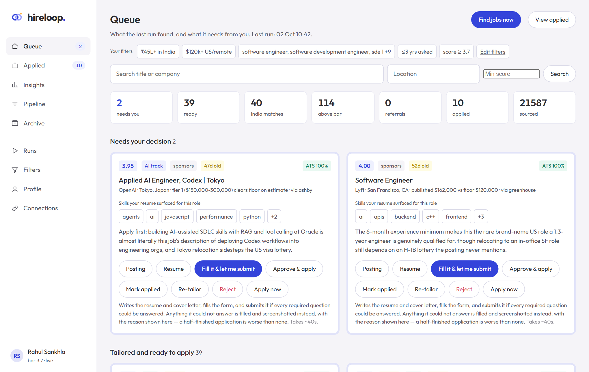
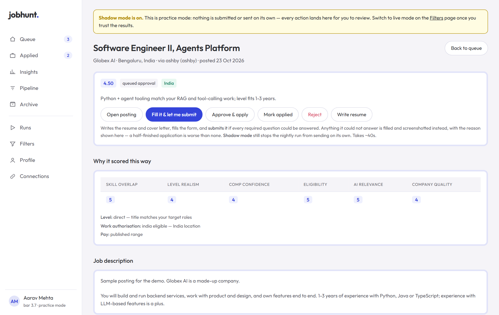
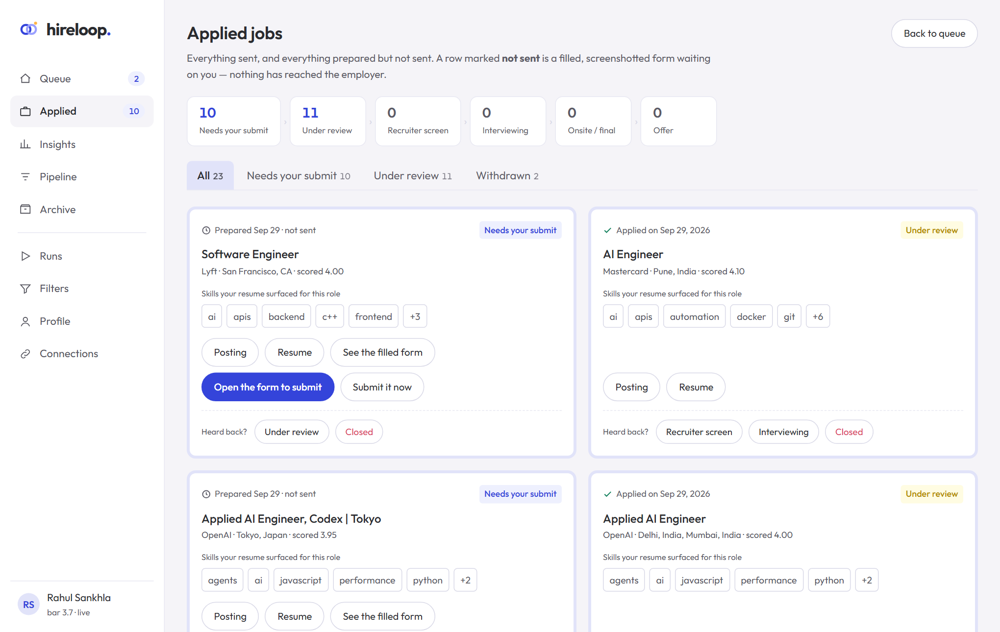
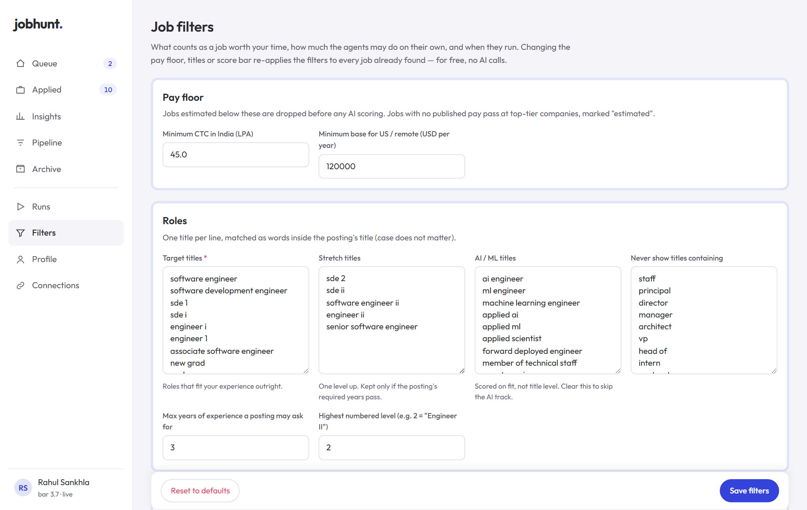
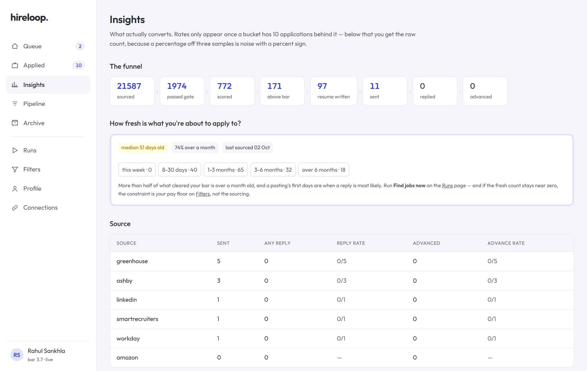
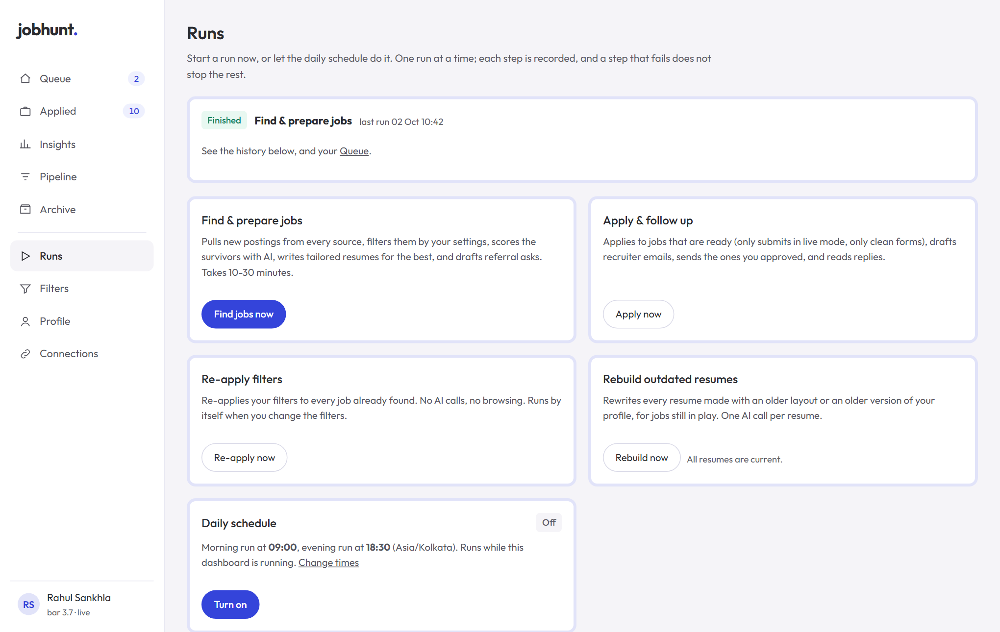

It finds openings on 170+ company career boards and LinkedIn, filters them by your rules, scores each one for fit, tailors a fact-checked resume, and fills in application forms. You approve everything from a dashboard in your browser.

Greenhouse, Ashby, Lever, Workday, SmartRecruiters and Amazon boards, plus LinkedIn and Wellfound public listings.
Pay floor, titles, level, location and years asked are checked by rules before any AI call.
Each job gets a 1–5 score with the reasons: skills, level, pay confidence, eligibility.
Tailored or unchanged resume, filled forms, screenshots. Practice mode never submits on its own.
irm https://raw.githubusercontent.com/RahulSankhla312/hireloop/main/install.ps1 | iexcurl -fsSL https://raw.githubusercontent.com/RahulSankhla312/hireloop/main/install.sh | shhireloop demohireloop web, upload your resume once,
set your filters, connect the AI engine (Claude Code or an Anthropic API key), and press Find jobs now.



